Introduction to Neuroanatomy
- CNS = brain + spinal cord; PNS = spinal and cranial nerves, ganglia, autonomic nerves. Grey matter = cell bodies (cortex on the outside of the brain, nuclei deep); white matter = myelinated axons. Afferent = sensory in; efferent = motor out.
- Lobes: frontal (voluntary movement, planning, eye movements, speech production), parietal (sensation, spatial awareness, understanding speech), temporal (hearing, smell, recognizing objects, words and faces), occipital (vision), insula (taste, visceral sensation), limbic (cingulate and parahippocampal gyri). The central sulcus separates frontal from parietal.
- Brainstem, rostral to caudal: midbrain, pons, medulla. Rule of 4: CN I–IV at or above the midbrain (I and II off the forebrain; III and IV midbrain), V–VIII pons, IX–XII medulla (XI from the upper cervical cord). CN IV is the only one leaving the back of the brainstem; VI leaves the midline at the pontomedullary junction; XII between pyramid and olive.
- MRI: T1 = anatomy (grey vs white); T2 = bright CSF; FLAIR = T2 with CSF nulled, best for white matter lesions. CT is fast (2 mm sections); x-ray shows only bone.
- CSF is made by the choroid plexus (ependymal cells): lateral ventricles → interventricular foramen → 3rd → cerebral aqueduct → 4th → apertures → subarachnoid space → arachnoid granulations → dural sinuses. Middle meningeal artery rupture = epidural hematoma. MCA = lateral cortex (face and arm); ACA = medial cortex (leg).
Learning Objectives
- Define and use fundamental neuroanatomical terms; separate structural from functional organization.
- Identify the major regions of the brain, spinal cord and PNS, and the forebrain, midbrain and hindbrain.
- Identify the lobes and the functions of the motor, somatosensory and visual cortices.
- Describe the basal ganglia and cerebellum in motor control and movement disorders.
- Describe CT and MRI and what each shows.
A 100-minute module by Dr. Andrew Deweyert (anatomy and cell biology): six recordings (organizing principles; cortex and basal ganglia; brainstem, spinal cord, ventricles and vessels; and an optional lab demonstration with cranial nerves and the arterial circle on specimens). Why it matters: knowing what lives where lets you localize a lesion from the symptoms (12.4), and the meninges explain epidural, subdural and subarachnoid bleeds.
Organizing Principles
Divisions, directions and imaging.
Divisions of the Nervous System
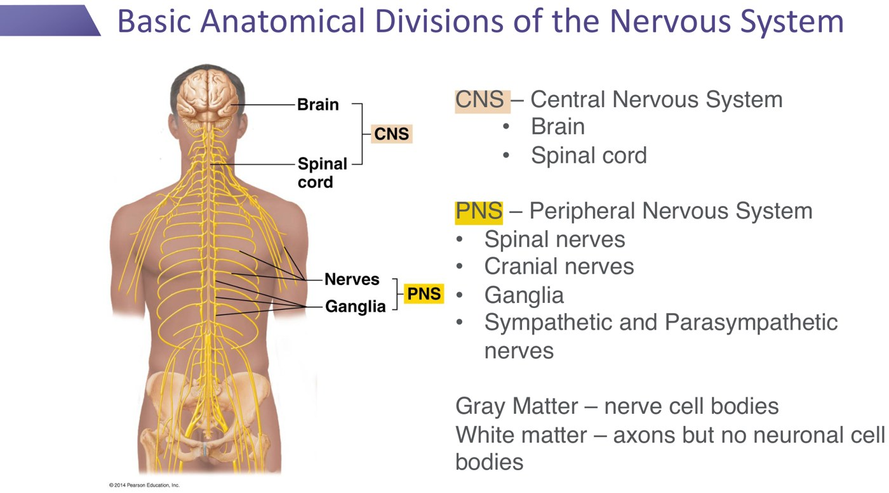
| Anatomical | Functional |
|---|---|
| CNS: brain and spinal cord, in the skull and vertebral canal, protected by meninges and CSF. Role: integration and coordination. PNS: spinal nerves, cranial nerves, ganglia, sympathetic and parasympathetic nerves | Sensory input (afferent, from inside and outside the body) → integration (process, interpret, decide) → motor output (efferent, to muscles and glands) |
Simple vs complex: stepping on a sharp object fires a reflex that never needs the brain (fast, for survival); planning universal health care needs the whole cortex.
| Part of the brain | Made of |
|---|---|
| Brainstem | Medulla + pons + midbrain |
| Cerebellum | Grows embryologically out of the pons but is its own region |
| Diencephalon | Thalamus, hypothalamus, epithalamus (subthalamus on the slide) |
| Cerebrum | Two hemispheres = 80% of brain mass |
Grey matter inside, white matter around it, hollow ventricles in the middle; the cerebrum and cerebellum add an outer sheet of grey matter, a cortex. All other brain grey matter sits in clusters called nuclei.
Directions and Planes
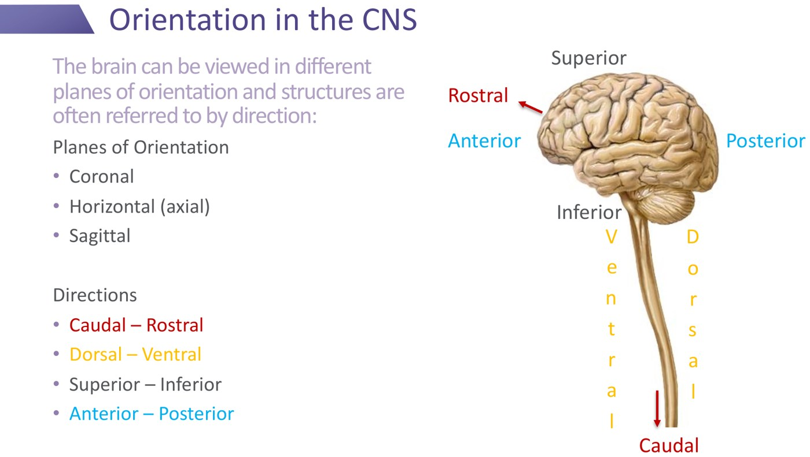
| Plane | Cut |
|---|---|
| Coronal | Dorsal to ventral (like a slice of bread facing you) |
| Horizontal (axial) | Parallel to the horizon: how CT and most MRI are viewed |
| Sagittal | Front to back, splitting left from right |
Neuroimaging
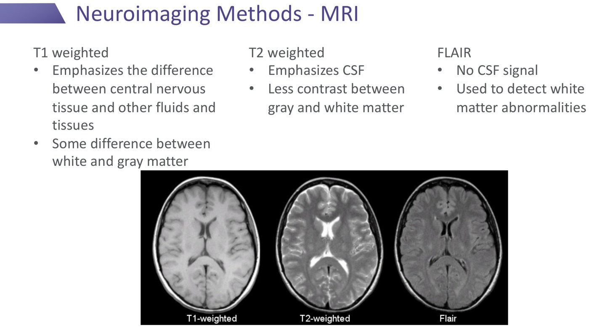
| Modality | Shows | Use |
|---|---|---|
| X-ray | Bone only; nervous tissue invisible | Bony abnormalities |
| CT | Sections at ~2 mm resolution; brightness by density; lesions differ in density from brain | Fast (acute bleed, trauma) |
| MRI T1 | CNS tissue vs fluid; some grey–white contrast; CSF dark | Anatomy |
| MRI T2 | CSF bright; less grey–white contrast | Fluid, edema |
| FLAIR | No CSF signal | White matter abnormalities (e.g., MS plaques) |
The Forebrain: Cortex, Basal Ganglia and Diencephalon
Forebrain = telencephalon (cerebral hemispheres and deep structures) + diencephalon (thalamus, hypothalamus, subthalamus).
Fissures, Sulci and Gyri
| Term | Meaning |
|---|---|
| Longitudinal fissure | Separates the right and left hemispheres |
| Transverse cerebral fissure | Separates the cerebrum from the cerebellum |
| Sulcus | A shallow groove |
| Gyrus | A ridge between sulci |
| Corpus callosum | The big white-matter bridge between the hemispheres |
The Lobes
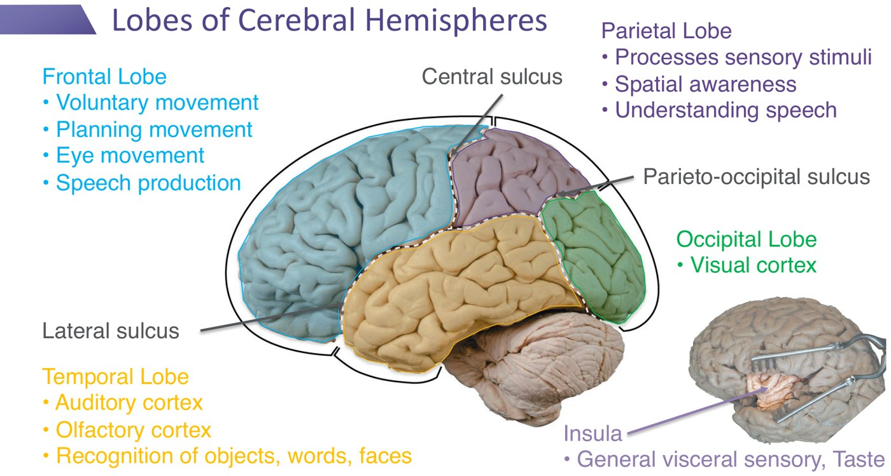
| Lobe | Functions | Boundary / site |
|---|---|---|
| Frontal | Voluntary movement, planning movement, eye movement, speech production; executive function | In front of the central sulcus; anterior cranial fossa |
| Parietal | Sensory processing, spatial awareness, understanding speech | Behind the central sulcus, in front of the parieto-occipital sulcus |
| Temporal | Auditory and olfactory cortex; recognizing objects, words, faces; memory | Below the lateral sulcus; middle cranial fossa |
| Occipital | Visual cortex | Behind the parieto-occipital sulcus |
| Insula | Taste (gustatory), general visceral sensation | Hidden deep in the lateral sulcus, covered by frontal, parietal and temporal lobes |
| Limbic | Emotion and memory (with the limbic system) | Medial surface: cingulate and parahippocampal gyri |
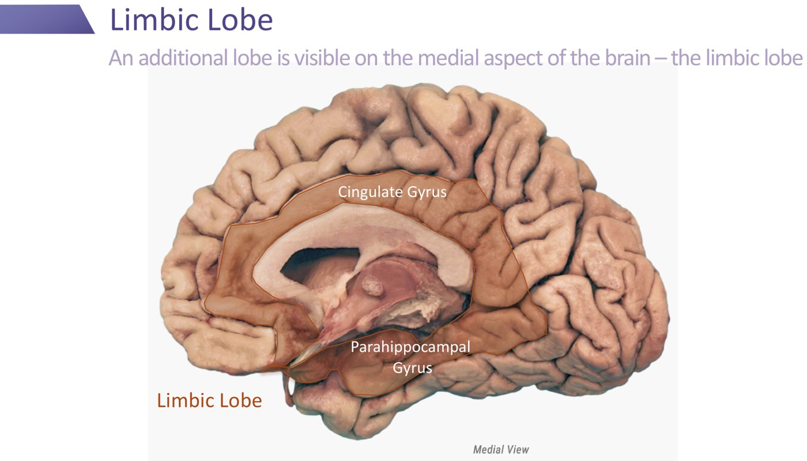
Basal Ganglia
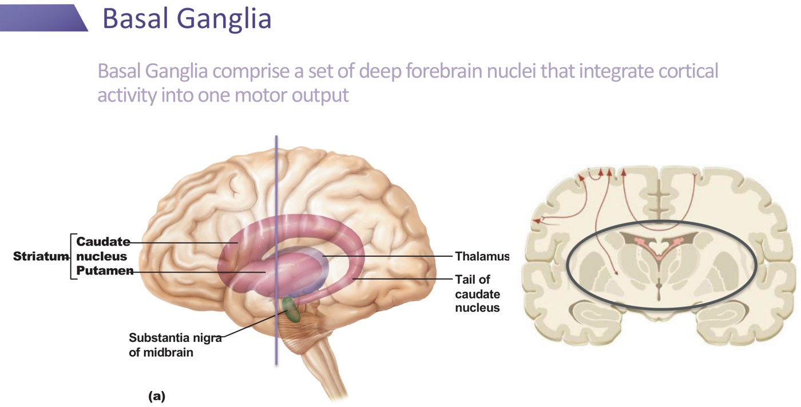
A set of deep forebrain nuclei that integrate cortical activity into one motor output: they set the intensity and speed of movement, initiate it, run rhythmic repetitive tasks and help learn habits. Lesions don't cause weakness; they cause slowness and rigidity (parkinsonism) or extra movements (chorea, dystonia, hemiballismus). The basal forebrain nuclei make acetylcholine (arousal, learning, memory); their degeneration is linked to Alzheimer's disease.
Diencephalon
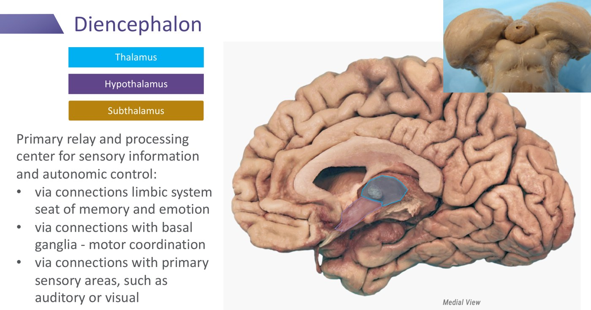
| Part | Function |
|---|---|
| Thalamus | Sensory nuclei for every conscious sense except smell; everything going to the cortex relays through a thalamic nucleus. Links to the limbic system (memory, emotion), basal ganglia (motor coordination) and primary sensory areas. |
| Hypothalamus | The visceral control centre: autonomic nervous system (HR, BP, digestion, glands), emotion and motivation, temperature, hunger, thirst, sleep, the endocrine system. The mammillary bodies (memory; Papez circuit) are hypothalamic. |
| Epithalamus | Most dorsal; the pineal gland makes melatonin (sleep at night) |
Brainstem, Cranial Nerves and Spinal Cord
The “reptile brain”: oldest, in the posterior cranial fossa, keeping us alive.
The Three Parts of the Brainstem
| Part (rostral → caudal) | Function | Anterior landmarks | Posterior landmarks | CN nuclei |
|---|---|---|---|---|
| Midbrain | Motor control, visual and auditory reflexes | Cerebral peduncles (with the interpeduncular fossa between), mammillary bodies just above | Tectum: superior colliculi (visual reflexes) and inferior colliculi (auditory reflexes) | III, IV |
| Pons | Relay station (cerebrum ↔ cerebellum via pontine nuclei); movement coordination; facial expression | The bulging pons (the giveaway for the anterior surface) | Superior, middle, inferior cerebellar peduncles; floor of the 4th ventricle | V, VI, VII, VIII |
| Medulla | Vital autonomic centres: breathing, heart rate, blood pressure (vasomotor), digestion; cough, sneeze, swallow, hiccup | Pyramids (motor tracts; most fibres cross at the decussation of the pyramids) and olives lateral to them | Fasciculus gracilis (leg) and cuneatus (arm) bumps; obex | IX, X, XI*, XII |
* CN XI nuclei sit in the rostral cervical cord. The decussation of the pyramids is why each hemisphere moves the opposite side of the body.
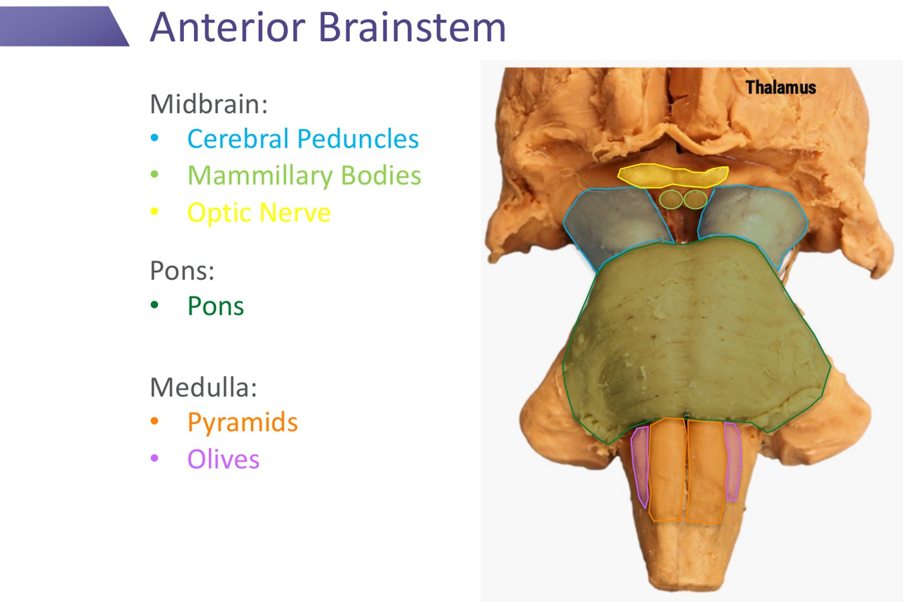
Anterior brainstem. From the deck.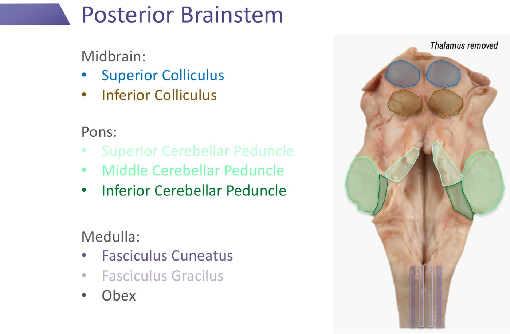
Posterior brainstem (cerebellum removed). From the deck.Cranial Nerves and the Rule of 4
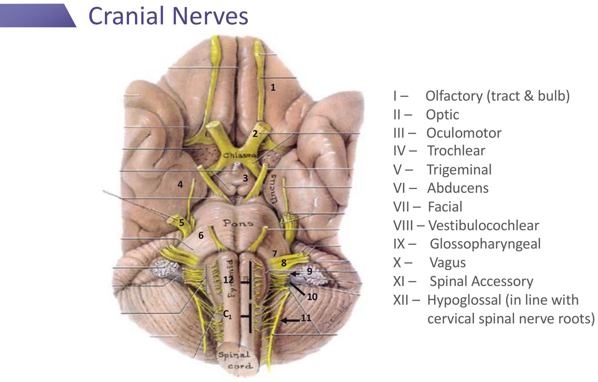
| Level | Nerve | Where it leaves |
|---|---|---|
| Forebrain | I Olfactory | Olfactory tract and bulb on the cribriform plate, directly off the cortex |
| II Optic | Off the forebrain; the optic chiasm sits in the midline | |
| Midbrain | III Oculomotor | The interpeduncular fossa, between the cerebral peduncles |
| IV Trochlear | The only nerve off the posterior brainstem, just below the inferior colliculi; thin, long course wrapping around (often torn in dissection); one muscle | |
| Pons | V Trigeminal | Big and chunky, lateral mid-pons |
| VI Abducens | Pontomedullary junction, in the midline | |
| VII Facial | Pontomedullary junction, laterally, one after the other; travel together through the internal acoustic meatus | |
| VIII Vestibulocochlear | ||
| Medulla | IX Glossopharyngeal | Wisps behind the olive (hard to tell apart) |
| X Vagus | ||
| XI Spinal accessory | Rootlets from the upper cervical cord (and medulla); climbs up through the foramen magnum, exits the jugular foramen | |
| XII Hypoglossal | Between the pyramid and the olive (the only one there); in line with the cervical roots; tongue |
Four nerves at or above the midbrain, four in the pons, four in the medulla and below. A brainstem lesion with a CN VI or VII palsy is in the pons; with XII, the medulla; with III, the midbrain. (Rule 1 of the “four rules of four”; the rest come in the brainstem lectures.)
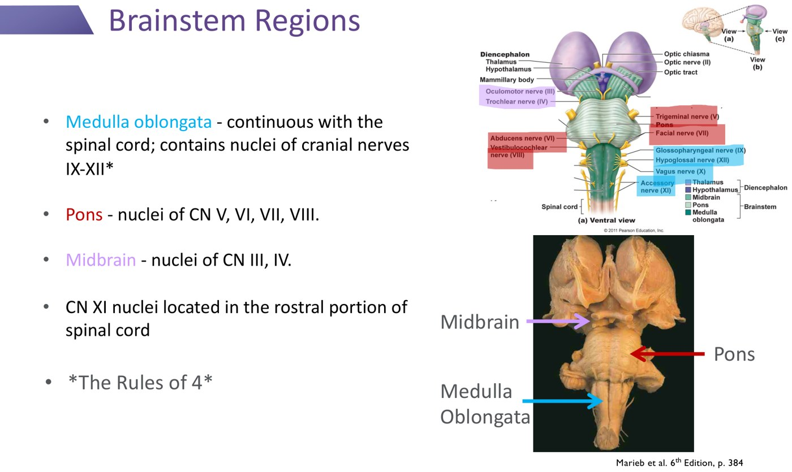
Spinal Cord and Its Tracts
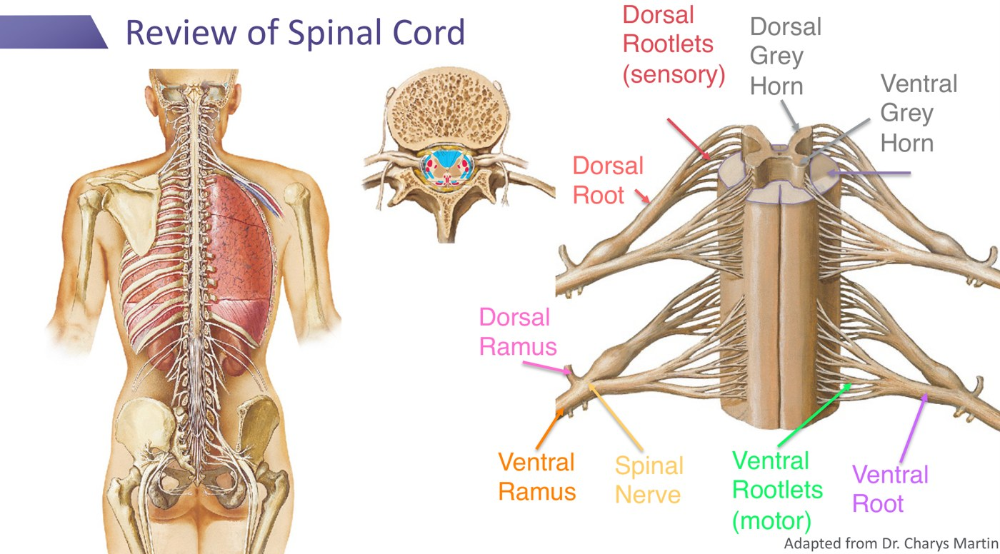
Horns, roots and rami. From the deck (adapted from Dr. Charys Martin).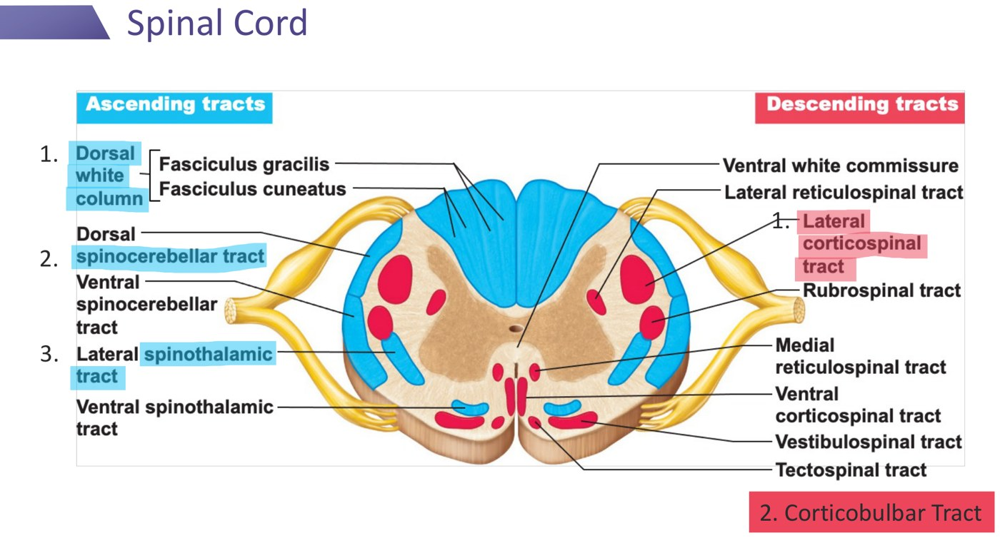
Ascending (left) and descending (right) tracts. From the deck.| Structure | Carries |
|---|---|
| Dorsal grey horn / dorsal root (with the dorsal root ganglion) | Sensory in |
| Ventral grey horn / ventral root | Motor out |
| Ventral ramus | All the limbs and the front of the body |
| Dorsal ramus | Only the deep (intrinsic) back muscles and the skin over them |
| The five key tracts | Direction | Carries |
|---|---|---|
| Dorsal columns: fasciculus gracilis (medial, lower limb) and cuneatus (lateral, upper limb) | Ascending | Fine touch, vibration, proprioception |
| Spinothalamic (lateral + ventral) | Ascending | Pain and temperature |
| Spinocerebellar (dorsal + ventral) | Ascending | Proprioception to the cerebellum |
| Lateral corticospinal | Descending | Primary motor to the limbs |
| Corticobulbar | Descending | Ends in the brainstem: motor to cranial nerve nuclei (facial expression) |
Ventricles, Barriers and Vessels
The Ventricular System and CSF
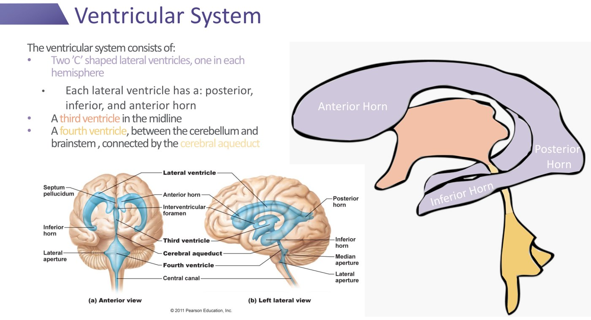
The ventricles. From the deck.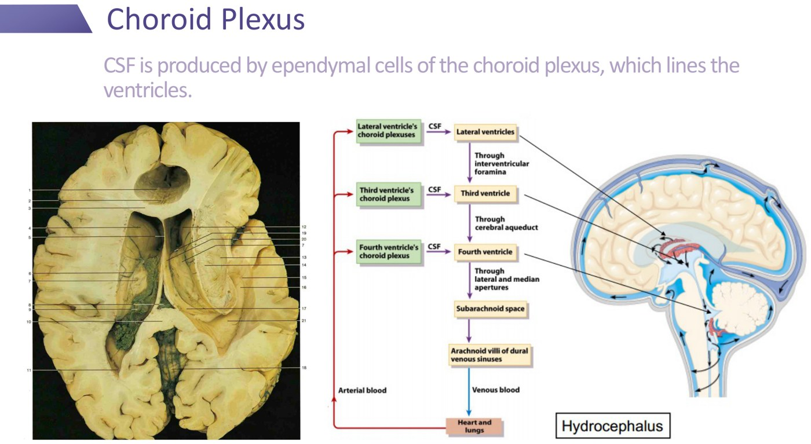
Choroid plexus and CSF flow. From the deck.| Ventricle | Where |
|---|---|
| Lateral × 2 (formerly 1st and 2nd) | C-shaped, one per hemisphere: anterior horn (frontal), posterior horn (occipital), inferior horn (temporal) |
| Third | Midline slit between the two thalami (diencephalon); joined to each lateral ventricle by an interventricular foramen |
| Cerebral aqueduct | Through the midbrain, 3rd → 4th |
| Fourth | Between the pons/medulla and the cerebellum; continues as the central canal; lateral and medial apertures open to the subarachnoid space |
By ependymal cells of the choroid plexus (in every ventricle).
Lateral ventricle → interventricular foramen → 3rd → aqueduct → 4th → apertures → subarachnoid space around the brain and cord.
At the top of the brain through arachnoid granulations into the dural venous sinuses.
CSF floats and cleans the brain. Block the flow or make too much and you get hydrocephalus (obstructive or communicating): expanded ventricles with mass effect.
Blood–Brain Barrier
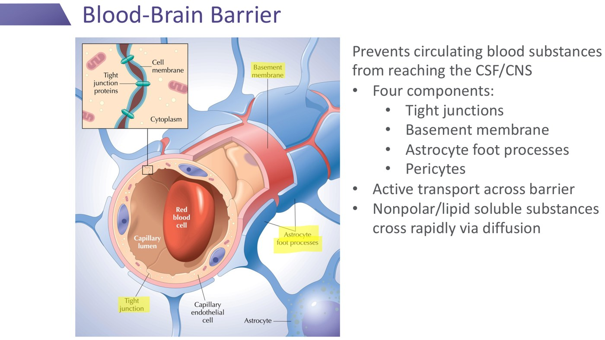
Keeps circulating substances out of the CSF/CNS (the brain is a privileged site, like the testes). Four components: tight junctions, basement membrane, astrocyte foot processes (the astrocytes maintain the barrier and do the active transport), pericytes. Everything crosses by active transport except non-polar, lipid-soluble substances, which diffuse rapidly. That's why many drugs (chemotherapy, antiepileptics) struggle to reach the brain.
Arteries and Venous Sinuses
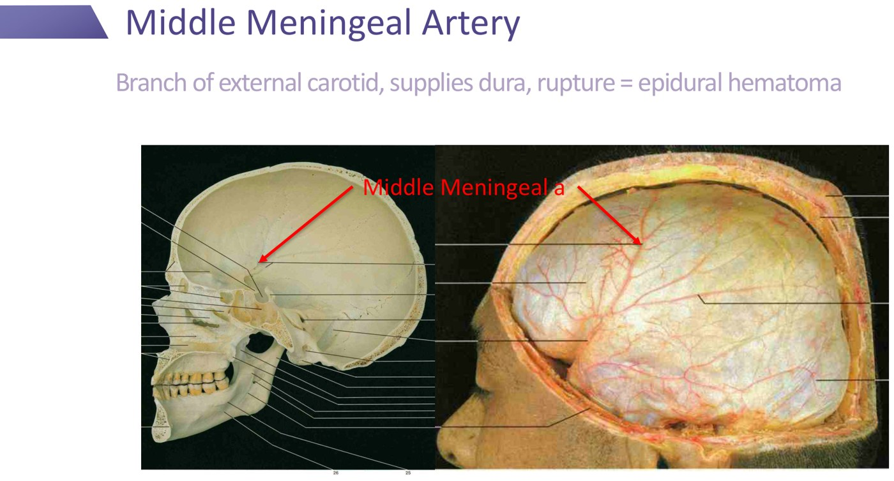
Middle meningeal artery: rupture = epidural hematoma. From the deck.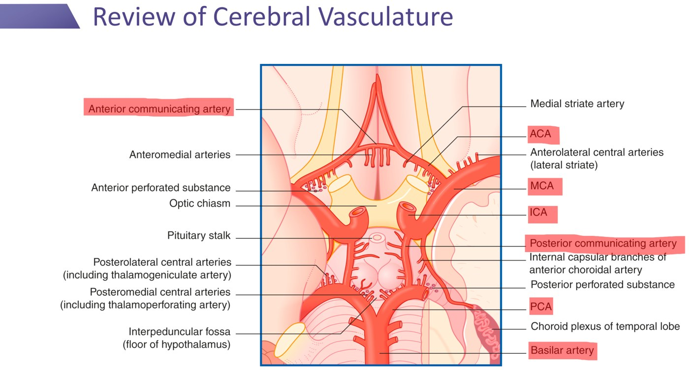
The cerebral arterial circle (circle of Willis). From the deck.| Vessel | Key point |
|---|---|
| Middle meningeal artery | Branch of the external carotid, enters via the foramen spinosum, supplies the dura. Rupture (often a temporal skull fracture) → arterial bleed into the epidural space: dangerous. |
| Vertebral → basilar | Up through the foramen magnum; the basilar supplies brainstem and cerebellum (AICA, PICA) and ends as the posterior cerebrals |
| Internal carotid | Enters the skull through the carotid canal; gives the MCA and ACA |
| MCA | Runs laterally: lateral frontal and parietal, temporal lobes, the motor and sensory cortex for the face and hand/arm |
| ACA | Runs along the midline (longitudinal fissure): medial surface, the cortex for the leg, foot and genitals |
| PCA | Posteriorly: occipital lobe |
| Anterior / posterior communicating | Close the circle: ACom joins the two ACAs; PCom joins the PCA to the internal carotid. Important for occlusions, aneurysms and watershed zones. |
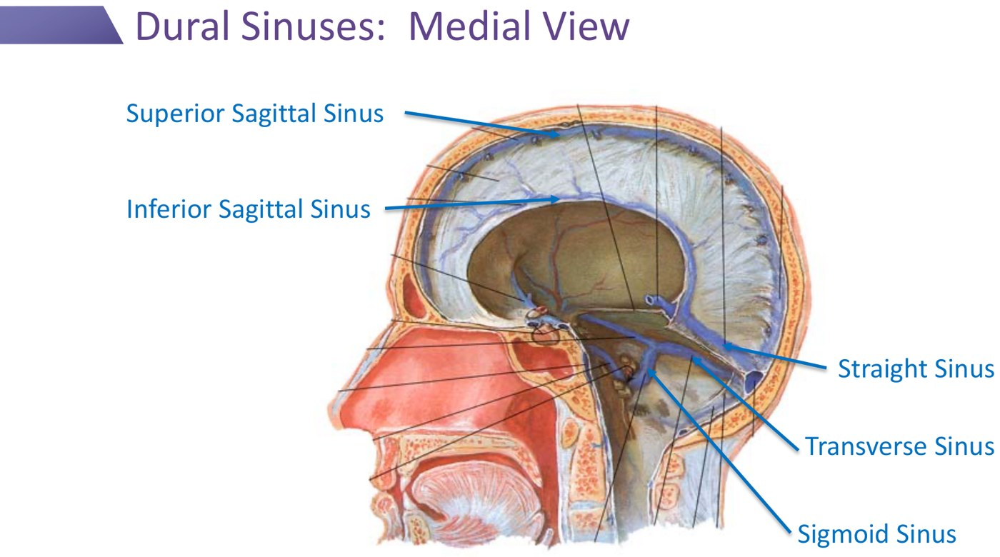
Venous drainage: superior sagittal sinus (receives CSF via the arachnoid granulations) and inferior sagittal → straight sinus meet at the confluence of the sinuses → transverse → S-shaped sigmoid → jugular foramen → internal jugular vein.
Practice Questions (from the lecture notes)
1. The central sulcus separates which lobes?
Answer
Frontal and parietal.
2. Which cell maintains the blood–brain barrier: neurons, microglia, ependymal cells, astrocytes, oligodendrocytes?
Answer
Astrocytes (ependymal cells make CSF).
3. Which imaging best detects white matter abnormalities?
Answer
FLAIR MRI.
4. The insular cortex: spatial awareness, visual cortex, gustatory cortex, object recognition or speech?
Answer
Gustatory (taste) cortex.
5. The midbrain is associated with which cranial nerves?
Answer
III and IV.
6. The dorsal grey horn transmits sensory or motor information?
Answer
Sensory.
7. After a blow to the temple, a man is lucid for an hour, then deteriorates. Which vessel, which space?
Answer
Middle meningeal artery → epidural hematoma (arterial, between skull and dura).
Built from Dr. Andrew Deweyert's “Introduction to Neuroanatomy” deck and lecture notes and his six recordings (including the lab demonstration of cranial nerves and the arterial circle on specimens). Practice questions 1–6 are from the lecture notes; 7 is added. Cadaveric specimen photos from the lab demonstration aren't reproduced. Notes: the notes say the medulla holds nuclei of CN “XI–XII” while the slide says IX–XII; the page uses IX–XII. Captions garble names (“Fox cerebral” = falx cerebri, “Siculus” = fasciculus, “OpEx” = obex).